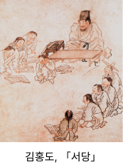

1번
다음 기사의 내용 중 알맞은 것을 고르세요.
<서당의 증가와 함께 발달하는 서민 문화>

한 그림이 사람들의 주목을 받고 있다. 그림의 작가인 김홍도는 최근 늘어나고 있는 서당에서의 모습을 나타냈다. 최근에는 서당이 널리 보급되면서
1
한글로 쓴 문학 작품이 널리 읽히고 있으며,
2
불교를 널리 믿어 팔관회라는 축제에 사람들로 인산인해를 이루고 있다.
또한
3
몽골을 물리치길 바라는 마음을 담아 팔만대장경을 만들었으며,
4
무덤 안에 벽화를 그리는 것이 유행이다.
한편
5
지방에서는 호족이 성장하여 자신의 지역을 직접 다스리고 있다.